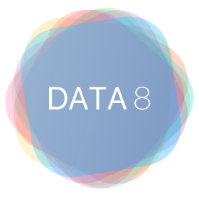
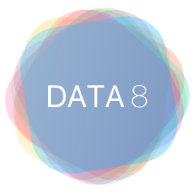

Upstate Roots & The Hudson
I grew up near the Hudson River in upstate New York, where environmentalism was part of everyday life. Those projects sparked my curiosity for evidence and measurement—data science I didn’t yet know I was doing.

Seed Scholars & Starting Early
At UC Berkeley I joined the Seed Scholars Honors Program, a community for minoritized students in STEM. Starting early gave me space to explore, ask questions, and find mentors.

Discovering Data Science & Paying It Forward
I discovered data science through Data 6 (my first code!), then deepened it in Data 8 and Data 100. Those courses shaped how I think about experimentation and evidence. Wanting others to feel that same spark, I became a tutor and later a TA, helping students navigate the very classes that changed my path.
 



Research: Askademia
As a Data 100 TA, I joined research with Professor Narges Norouzi. We built Askademia, a real-time AI system for student support—work that earned Best Paper at AIED.

Into Industry — Autodesk
Research led me to AI agents and a Machine Learning Engineer internship at Autodesk. I worked on agentic systems that supported real teams—hands-on, product-minded AI.
Service & Music
Alongside engineering, I joined a nonprofit consulting club and partnered with music organizations. I grew up playing trumpet—contributing here felt like coming home.

Practice, Stages, Community
Community and performance shaped my sense of craft—attention to detail, deliberate repetition, and sharing the stage generously.

Creative Curiosity
I love the intersection of making and meaning—whether in a rehearsal hall or a data notebook. Curiosity is the through-line.

Studying Abroad — Italy
Now I’m in Italy taking art classes, applying to roles, and exploring what’s next. It’s a season of learning, building, and seeing with fresh eyes.

Making Things, Sharing Work
Whether code, curriculum, or prints—I like making artifacts that help others. That’s the kind of work I want to keep doing.

What’s Next
I’m exploring roles where I can bridge AI, product, and pedagogy—shipping helpful, human-centered tools while continuing to learn.